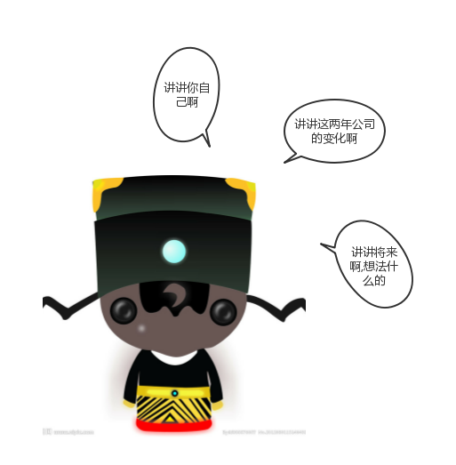
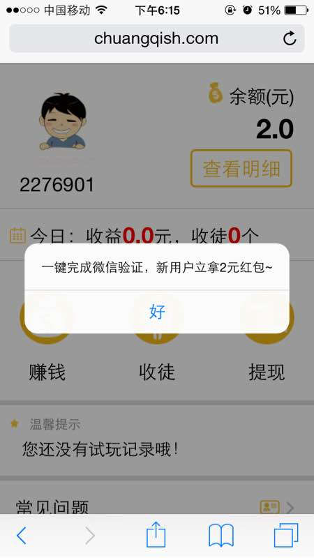
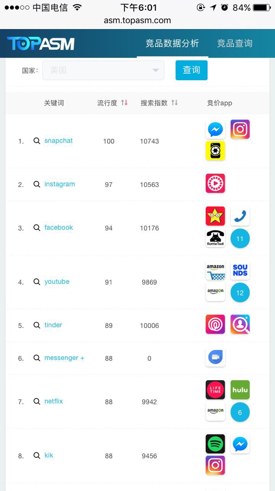
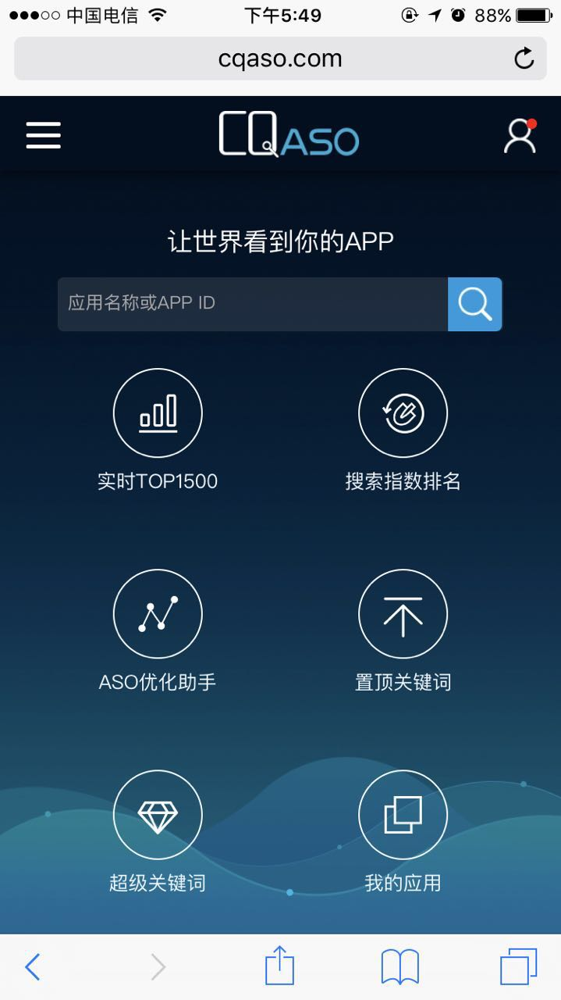
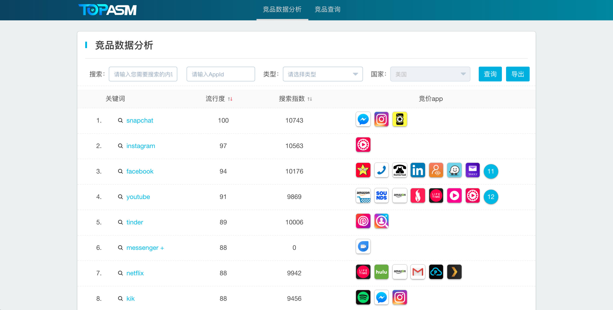
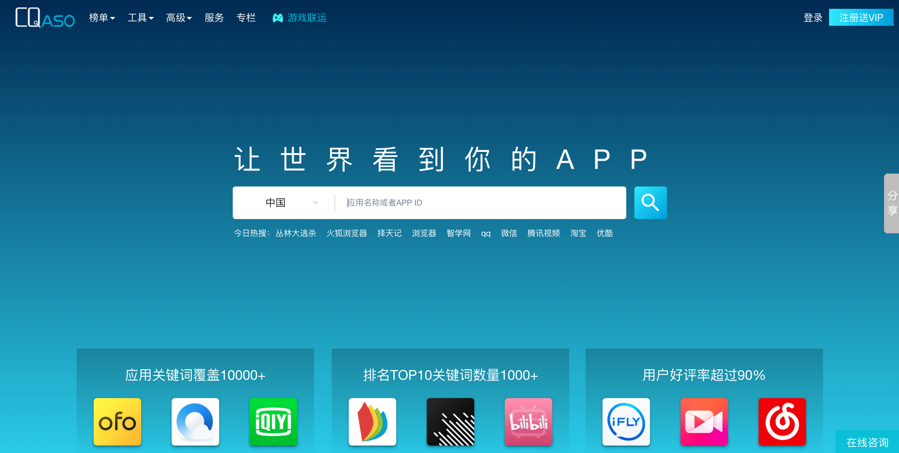
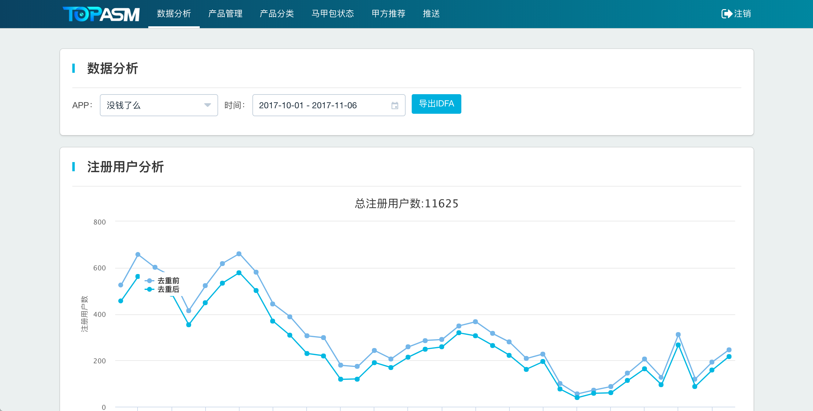

戴文俊
前端
在闯奇呆了两年多的一个螺丝钉
在上完厕所回来的路上
多看了黄老板一眼
讲点什么呢？

公司的变化
2015.10 ~ 现在
一.组织健全
二.业务拓展
三.技术升级
一.组织健全
最开始我们的公司是在创业谷(同济大学内部),那时候整个公司只有大小猫几只,不到十个人。
最经典的是奇总说的一句笑言
—— 我们这几个人代表近百人的团队
二.业务拓展
App
联运
...
三.技术升级

最初的时候前后端是在耦合在一起的,技术栈是: Servlet + Mysql + jsp ...
ps.就是大学里老师上课讲例子用的技术栈,基础中的基础,什么框架都没用 可以说了当时的技术远远的落后 有点拖后腿 /(ㄒoㄒ)/~~
目前技术上实现了 前后端的完全分离
前端技术栈: webpack nodejs spa/ssr postcss Vue/React ...
后端技术栈: Spring boot, mysql, redis, mongodb ...
ps.目前用的技术已经是行业的前沿水平 现在技术部能给公司提供强有力的支持 (*^__^*)~~
 
  
作为主角 强行刷一波存在感
很多人说我胖了
130斤 => 140斤
我增加的不仅仅只有体重 还有知识 （ ^_^ ）
结束总结
感觉大家听我讲的这几分钟，祝大家吃好喝好！
祝闯奇越来越棒！